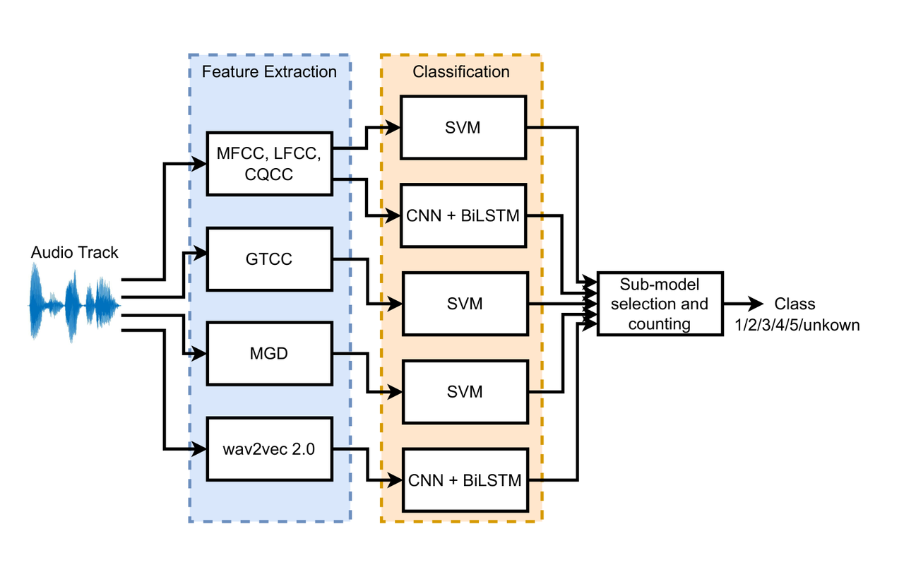
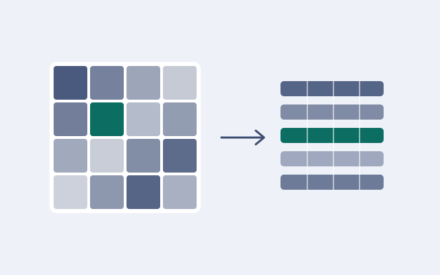
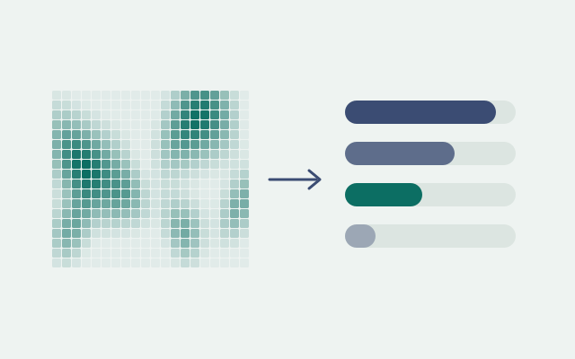

Matan Millionschik
Founder, Engineer and Product Manager.
I work on things that help me and the people around me. Take a look, and feel free to reach out!
Tel Aviv · Israel
Projects
Click any project to open it.
Personal Finance Agent
An AI agent over my own bank and card data — it tracks where my money goes and answers questions about it.
▸
Israeli banks and credit cards don't give you one view of your money, and mainstream budgeting apps either don't support them or depend on entering everything by hand. I built this to see my finances clearly without doing any of that. Every night it pulls my bank and card transactions automatically and turns them into a picture I can act on: spending by month and category, savings, budgets, recurring costs, and one-off events like trips.
It handles the details that usually make these numbers wrong — card bills that would otherwise be counted twice, purchases charged in foreign currency, and rent paid on an irregular schedule. On top of it sits an AI agent: I ask questions in plain language, like how much I spend on food or how much I need to save to reach a goal, and it answers from the actual transactions, with a chart when one helps.
- Nightly sync from my bank and two credit cards — no manual entry
- Spending, savings and budgets, by month and by category
- An AI agent that answers questions from the real transactions, using read-only tools
- Hebrew, right-to-left, built for the phone
Designed for the phone — best opened on mobile. On a desktop it shows as a narrow column.
Weight Tracking App
Tracks weight, activity and nutrition, and sets daily calorie and protein targets from what I actually do.
▸
Losing weight well depends on knowing how much to eat, and most calorie calculators get that number wrong by asking you to guess your activity level from a dropdown. This app works it out from real data instead. It logs my weight and waist over time, syncs my daily steps from Apple Health automatically, and records strength-training sessions — then combines all of it with my profile to set calorie and protein targets that follow how active I actually was.
It also says so when a goal is too aggressive to be healthy, rather than quietly changing it, and turns the history into trends and short notes that make progress easy to see and easier to keep up.
- Weight and waist logging, including filling in past dates
- Steps synced every night from Apple Health
- Calorie and protein targets based on measured activity and training
- Trends and progress notes over time
Designed for the phone — best opened on mobile. On a desktop it shows as a narrow column.

Synthetic Speech Attribution
Identifying which system generated a synthetic voice — our entry to the 2022 IEEE Signal Processing Cup.
▸
As synthetic speech becomes harder to tell apart from a real voice, knowing that a recording is fake matters less than knowing which system produced it. For the 2022 IEEE Signal Processing Cup, our team of four at the Technion's Signal and Image Processing Lab built a system that does exactly that. It extracts several families of acoustic features — cepstral coefficients, phase-based group delay and wav2vec 2.0 embeddings — classifies them with an ensemble of SVMs and CNN–BiLSTM networks, and flags recordings from synthesisers it has never seen before.
It reached 92.2% accuracy on clean audio and 78.4% on audio degraded by noise, reverberation and compression.
Travel App for Thailand
A travel companion I built as a gift for my girlfriend, before our trip to Thailand.
▸
Before our trip to Thailand, I built my girlfriend an app that held the whole trip in one place — as a gift. Planning a trip usually ends up scattered across map pins, booking emails, photographed documents and chat messages; this brought all of it together for the two of us, with a few touches made just for her.
- Our saved places, synced with Google Maps and our own lists
- Location tracking throughout the trip
- Every reservation and travel document in one place
- A few features made just for her
Currently paused: Supabase's free tier runs two active projects at a time, and the two apps above hold those slots. The data and design are intact.
Designed for the phone — best opened on mobile. On a desktop it shows as a narrow column.

Efficient Vision Transformers
Cutting what a Vision Transformer costs to run, while keeping its accuracy.
▸
Vision Transformers are among the most accurate image models, but they are expensive to run, which limits where they can be used. This project measured how far that cost can be reduced — through post-training quantisation of the PyTorch model, and inference-time optimisation of the Hugging Face model. Both were evaluated on an ImageNet-1k validation set we prepared and published, with its labels realigned to the ordering the model was trained on: a step that is easy to miss, and without which any accuracy figure is meaningless.

Sound Event Recognition with Transformers
A Transformer model that recognises which sounds are present in an audio clip, trained on FSD50K.
▸
A single audio clip often contains several sounds at once — speech over traffic, a dog behind music — so recognising them is a multi-label problem, not a choice of one class. This project built a full pipeline for it on FSD50K, a large public dataset of labelled everyday sounds: audio preparation and resampling, a Transformer encoder model, training, and evaluation by mean average precision. A separate condition excludes music, to measure how the model does on the environmental sounds that music tends to drown out.